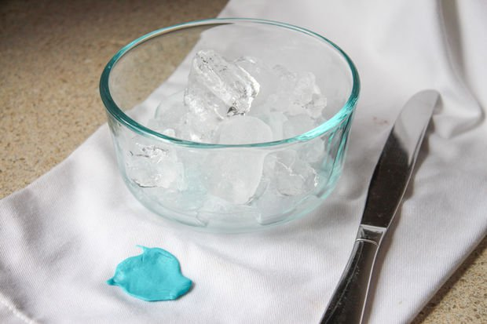
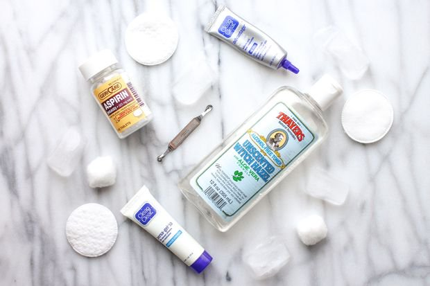

10 usos del hielo que probablemente no conocías
Los cubitos de hielo se han convertido en un elemento fundamental de casi todas las cocinas del mundo. Su principal cometido es mantener nuestras bebidas frescas, tienen otras muchas utilidades desconocidas para la mayoría.
Desde usos relacionados con la belleza, hasta una ayuda excepcional a la hora de realizar diversas limpiezas, los cubitos de hielo tienen mucho que ofrecernos. A continuación os mostraremos algunos de estos trucos.
1. Eliminar el chicle (goma de mascar) de la ropa, alfombras y pelo
Los cubitos de hielo son de gran ayuda para eliminar el chicle de estas superficies. En el caso de la ropa y la alfombra, solo hay que cubrir la goma de mascar con hielos hasta que esta se ponga dura por acción del frío (no llega a congelarse, pero casi). Entonces, con ayuda de un cuchillo, podremos raspar el chicle y se despegará de una forma mucho más rápida.
En el caso del cabello, la técnica es más o menos la misma. Rodeamos la goma de mascar con hielos e intentamos eliminarla cuando se encuentre semicongelada. Si este método no funciona también podemos probar impregnándola con aceite, margarina o mantequilla de cacahuete. Es una técnica mucho más sucia y pringosa, pero bastante útil.
2. Arroz recalentado en el microondas perfectamente
Cuando recalientas el arroz sobrante en el microondas suele quedarse un poco seco. La mejor manera de evitar esto es colocar un hielo encima del mismo y, de este modo, el hielo se evaporará y el arroz absorberá la suficiente humedad para quedar delicioso. Este truco es también útil con la pasta.
3. Ayuda contra el sabor de los medicamentos
La mayoría de medicamentos tienen un sabor horrible. Si chupamos un trozo de hielo, unos instantes antes de ingerir dichos medicamentos, nuestra lengua se adormecerá y será menos sensible a los sabores. Una gran ayuda a la hora de tragar medicamentos amargos.
4. Depilación sin dolor
A la hora de depilarse podemos insensibilizar la zona con ayuda del hielo. Para ello, envolvemos un par de cubitos en un paño y lo aplicamos en la zona que vayamos a depilar.
Este truco es especialmente útil para cejas y zonas pequeñas. Otra forma de utilizarlo es pasarlo por las zonas depiladas para calmar el escozor resultante.
5. Disminuye los moretones
Algunas personas son especialmente sensibles a sufrir moretones con cualquier golpe. Sea o no nuestro caso, cuando suframos algún tipo de contusión, aplicar hielo envuelto en un paño ayuda a disminuir estas lesiones y también las posibles inflamaciones.
El frío hace que los capilares se cierren más rápidamente, lo que se traduce en una lesión mucho menos alarmante.
6. Extraer una astilla sin dolor
Las astillas son, sin duda, horribles. Para extraerlas lo mejor que podemos hacer es adormecer la zona con ayuda de hielo envuelto en un trapo, antes de ponernos a manipular la astilla.
Este truco también sirve para las que quedan clavadas debajo de las uñas, que son especialmente dolorosas.
7. Recoger la capa de grasa superior de guisos y sopas
La mejor forma de eliminar la capa de grasa que se forma al cocinar sopas y guisos es con ayuda del hielo. Colocamos un par de hielos en la cuchara sopera y la introducimos en el guiso recorriendo la capa superior.
El cambio de temperatura hará que la grasa se solidifique, se adhiera a la cuchara y se vuelva mucho más densa.
8. Ayuda contra las espinillas
Los cubitos de hielo pueden ayudar en los tratamientos contra las espinillas. El frío disminuye la inflamación, la irritación y el enrojecimiento que producen.
Envolvemos un cubito de hielo en un paño y lo aplicamos en la zona afectada. Debemos mantenerlo sobre la espinilla un tiempo prudencial, evitando llegar al extremo de causarnos quemaduras por el frío. Una vez lo retiremos, la zona estará levemente enrojecida. Este color desaparecerá rápidamente. Podemos repetirlo tantas veces como sea necesario.
Este truco es especialmente bueno para aquellos que padecen acné quístico. Reduce el dolor y la inflamación de una forma totalmente natural y sin dejar marcas.
9. Eliminar las marcas de las alfombras
Dependiendo del tejido de la alfombra, este truco puede que funcione
mejor o peor. Sin embargo, no está de más darle una oportunidad.
Cuando colocamos un mueble encima de una alfombra durante
un largo período de tiempo, lo normal es que aparezca una marca donde
estaba apoyado. Para eliminarla, colocaremos unos cuantos hielos a lo
largo de estas marcas. Conforme los hielos vayan mojando la alfombra y
vaya secándose, esta volverá a obtener su aspecto original.
10. Ayuda con el maquillaje
A la hora de maquillarse, los poros más grandes son un pequeño problema. Si frotamos suavemente nuestra cara con un hielo envuelto en un pañuelo, los poros se cerrarán y facilitarán la correcta adhesión del maquillaje.
En verano también puede sernos bastante útil para refrescar la piel, y eliminar así los sudores antes de aplicarnos las cremas.
Fuente: Instructables